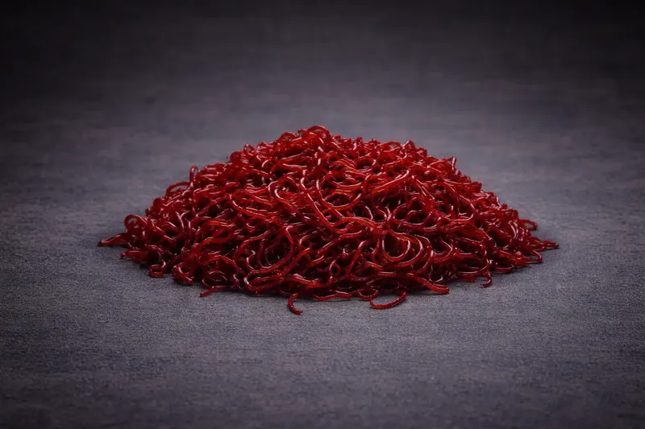

Живые корма
Мотыль
Цена и наличие
- лиманный, 1кг37,8 BYN / шт.В наличии
- кормовой, 1кг50 BYN / шт.В наличии
- насадочный, 1кг150 BYN / шт.В наличии
- уральский, 1кг105,3 BYN / шт.В наличии
- гигант, 1кг105,3 BYN / шт.В наличии
Данные на 23.11.2026.
Описание
Мотыль - это личинка комара из семейства Chironomidae (комары-звонцы, комары-дергуны).
Выделяют крупный, кормовой и мелкий (лиманный) мотыль. Эта классификация исходит не из-за величины. Размер личинок зависит не только от размера, но и от среды их обитания. Крупный мотыль обитает в озерном иле, а также иле прудов и луж. Его длина – до 2,5 сантиметров, цвет тела – темно-красный, красно-коричневый. Крупный мотыль используется в качестве основной наживки в любой период времени. Исключением считается жара и летний зной, в это время мотыль очень быстро погибает. Кормовой мотыль отличается от крупного своим размером. Его тяжело надеть на крючок, что делает невозможным его использование в качестве насадки. Но, такого размера мотыль прекрасно подходит в качестве добавки в корм. Благодаря добавлению кормового мотыля в прикормку, рыба лучше собирается в точку закармливания, т.к. корм животного происхождение всегда более предпочтителен для многих видов рыб нежели классическая прикормка Мелкий или лиманный. Многие рыболовы имеют мнение, что для рыбалки можно использовать исключительно крупный мотыль. Но это неправда. В некоторых ситуациях лучше подойдет мелкий мотыль. Например, в период зимнего клева, как и кормовой мотыль, лиманный используется в качестве закармливания, и он будет лучше собирать рыбку вокруг лунки, чем крупный мотыль
Хранение
Для хранения мотыля подходит металлическая емкость с водой. Для этого в баночке делают небольшие отверстия, наливают туда немного воды и сахара, добавляют мотыль и хранят в прохладном помещении. Чтобы сохранить мотыль зимой, подойдет большая емкость с илом или песком, залитая водой.
Для кого
Мотыль в качестве наживки можно использовать для большого количества рыбы и в любое время года. В первую очередь мотыль привлекателен для мелких видов рыбы. Его используют в качестве прикормки и наживки для такой рыбы как: лещ; карп; окунь; ерш; густера; плотва; красноперка; уклейка; линь; пескарь.